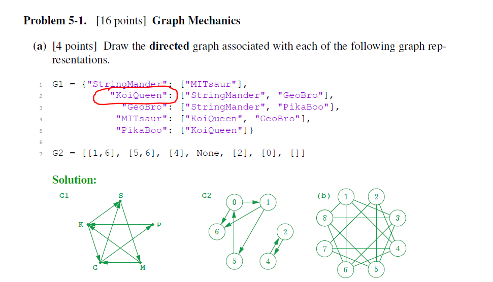
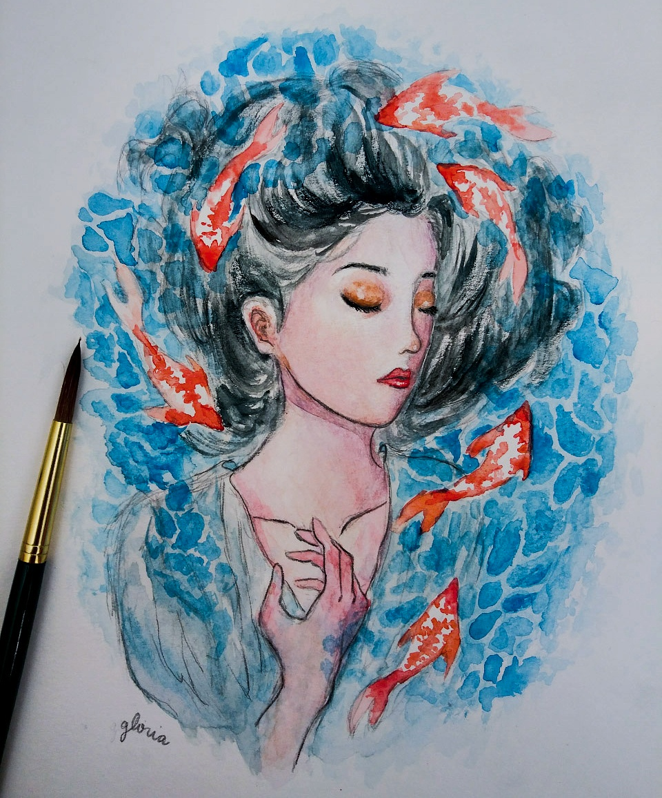
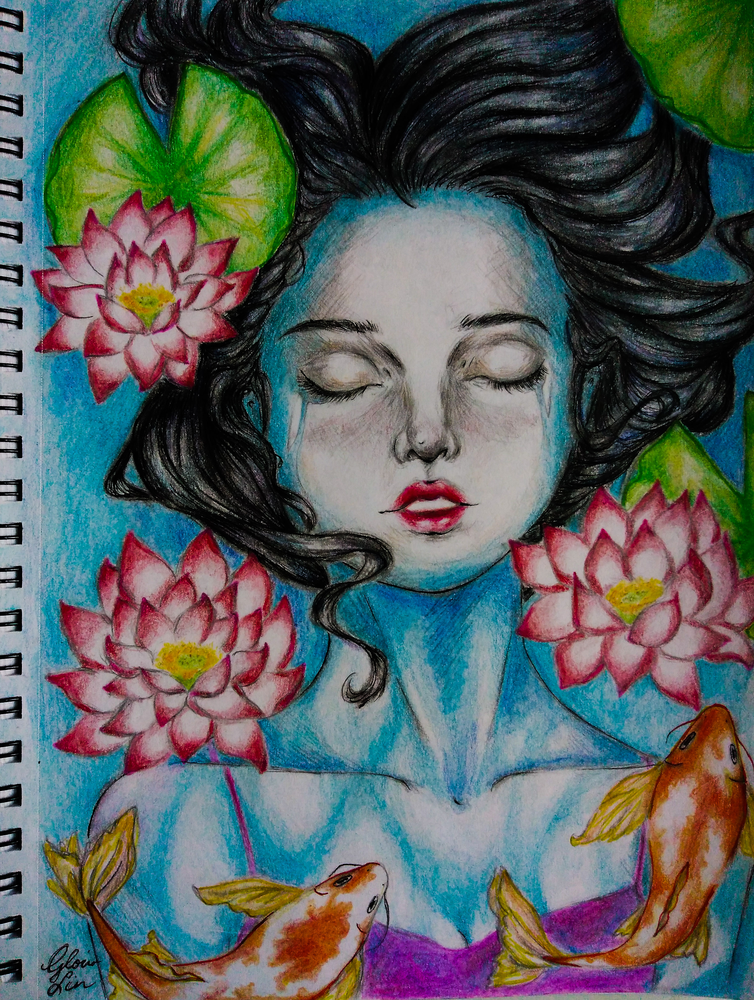

Like most students, my first spring break in college was spent coding a meme generator (awful hw assignment) and painting a six-foot-tall canvas. The painting was part of a Borderline x UA Innovation project to add artwork to the Banana Lounge (26-110), a beloved campus spot to pset, nap, and grab a free banana.
The title of the piece is pure coincidence: 'KoiQueen' was the name of a node on my algorithms pset around the same time I was painting koi and a girl.
 KoiQueen is based on some art I did in high school and intended to reflect nothing more than the tranquility of the Banana Lounge.
Overall, the painting itself took 2-3 full days of work. I had never painted anything this large before and have little experience with acrylic painting, but I’m glad it wasn’t too much to HAND-le. I'm almost finished with an AR animation for this piece where the fish swim around!